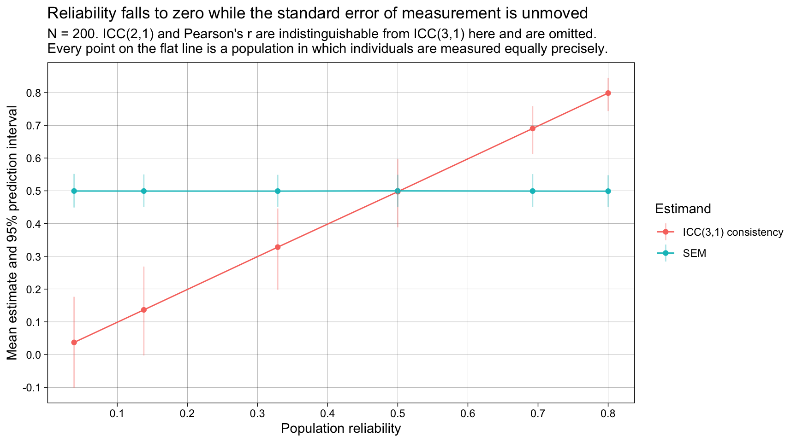
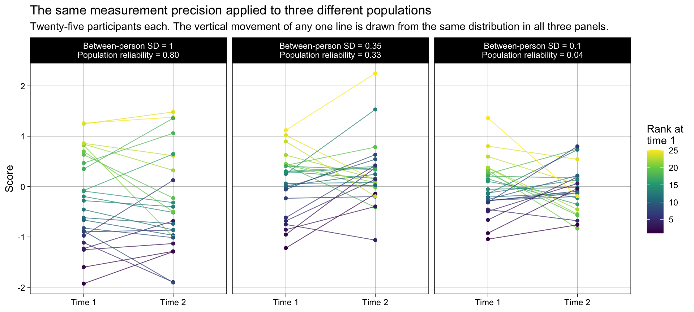
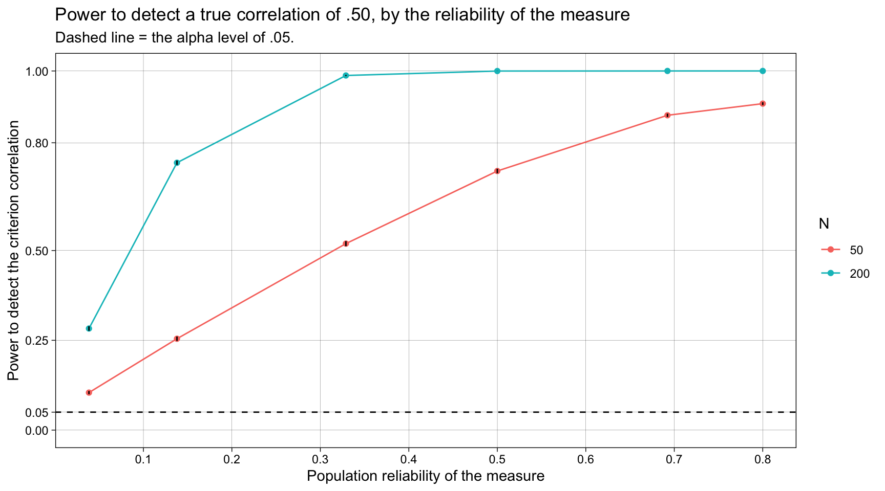
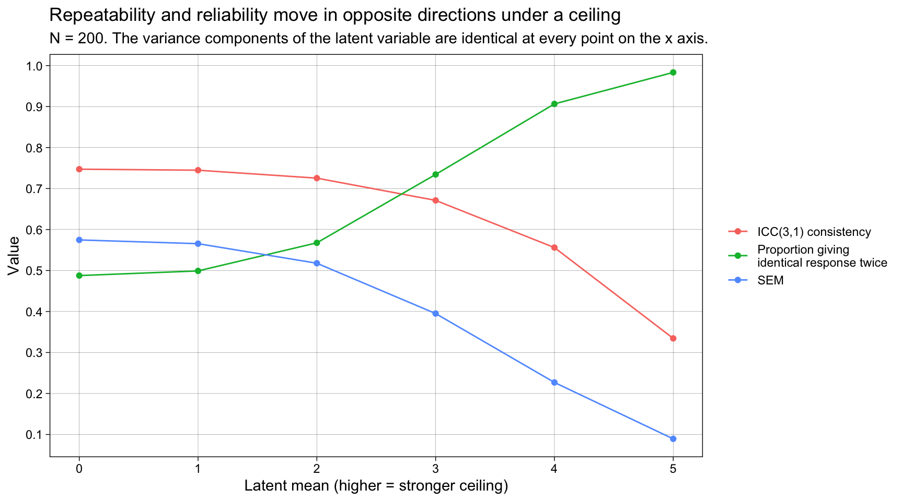
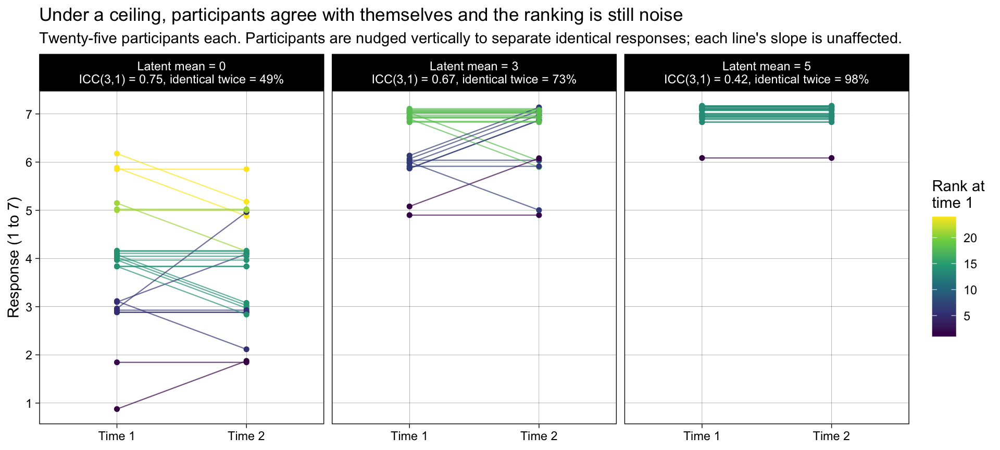
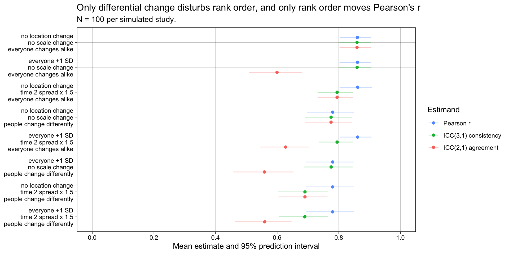
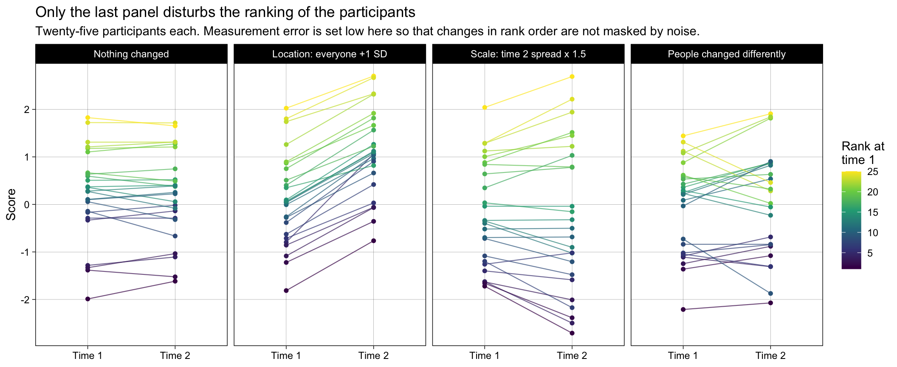
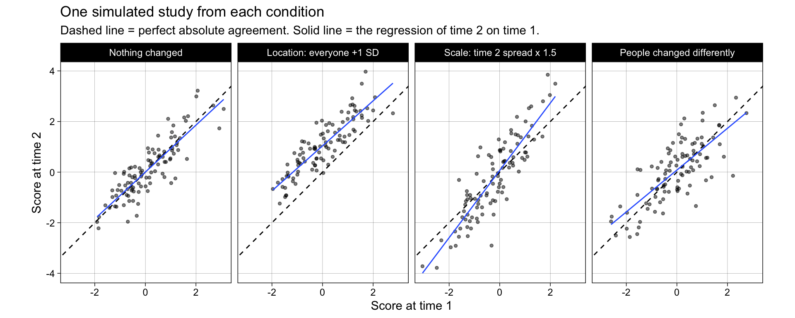

# dependencies
library(tidyr)
library(dplyr)
library(tibble)
library(purrr)
library(readr)
library(forcats)
library(furrr)
library(simhelpers)
library(ggplot2)
library(scales)
library(knitr)
library(kableExtra)
# set up parallelisation for {furrr}
# `furrr_options(seed = TRUE)` (used below in future_pmap calls) advances an L'Ecuyer-CMRG stream rather than re-seeding per worker, giving the parallel-safe reproducibility recommended in Siepe et al. (2024, p. 8).
# use availableCores to define the number of cores in case sim is being run on a HPC that might have more physical cores than are available to the session
plan(multisession, workers = parallelly::availableCores())18 Two misconceptions about reliability ✎ Rough draft
19 Introduction
19.1 Overview
Almost every psychology student learns that a measure should be “reliable”, and almost every psychology student learns to check this by measuring the same people twice and correlating the two sets of scores. Both of those sentences are correct. The trouble is that the mental picture students attach to them is usually wrong, in two specific and consequential ways.
Misconception 1: a task that produces a robust, replicable effect must be a good measure of individual differences. The Stroop effect is one of the most replicable findings in experimental psychology — it turns up in essentially every sample anyone tests it in. It is therefore tempting to treat the Stroop task as a reliable measure, and to use each participant’s Stroop score as an individual-differences variable to correlate with, say, a personality scale or a brain measure. Hedge, Powell, and Sumner (2018) showed empirically that this does not work: across seven classic cognitive tasks, test-retest reliabilities ranged from 0 to .82, and were poor for most of the tasks. Their explanation is what they called the reliability paradox. An experimental effect is robust because participants respond to the manipulation in much the same way as one another — that is, because between-participant variance is small. But between-participant variance is precisely the numerator of every reliability coefficient. The property that makes a task an excellent experimental workhorse is the same property that makes it useless as a correlational instrument.
Misconception 2: test-retest reliability means “measure the same thing twice and get the same number”. Ask a student what it would mean for a ruler to be reliable and they will say: measure this banana today, measure it again tomorrow, get 18 cm both times. That is a perfectly sensible idea, but it is not what a test-retest correlation quantifies. A correlation is computed over people, not within one person. It asks whether the ranking of the bananas is preserved from time 1 to time 2 — and it will happily report .99 even if every banana grew by 3 cm overnight, because a constant shift leaves the ranking untouched. Whether that shift counts against the measure depends on which coefficient you compute, and this is exactly the distinction between absolute agreement and consistency that separates the two most commonly reported intraclass correlations.
This chapter builds one simulation to make both points, because they are the same point seen from two sides.
19.2 The formula that generates both misconceptions
Hedge et al. (2018, p. 1167) give the intraclass correlation in the form
\[\text{ICC} \;=\; \frac{\sigma^2_{\text{between persons}}}{\sigma^2_{\text{between persons}} \;+\; \sigma^2_{\text{error}} \;+\; \sigma^2_{\text{between sessions}}}\]
Everything in this chapter is contained in that expression.
- Misconception 1 lives in the numerator. Shrink \(\sigma^2_{\text{between persons}}\) while leaving \(\sigma^2_{\text{error}}\) exactly where it is, and the ICC falls to zero. Nothing about the quality of the measurement has changed; the people being measured have simply become more alike. Reliability is a property of a measure in a population, not a property of a measure.
- Misconception 2 lives in the third term. \(\sigma^2_{\text{between sessions}}\) is the systematic change in the whole sample between time 1 and time 2 — the 3 cm that every banana grew. Whether that term appears in the denominator at all is the difference between the two ICCs: ICC(2,1) includes it and so penalises the shift, ICC(3,1) excludes it and so ignores the shift, and Pearson’s r also ignores it. Students who imagine reliability as “same banana, same number” are imagining a coefficient that includes the term. The coefficient they are usually handed does not.
Note also what is not in the formula: any notion of how precisely a single person’s score is pinned down in the units of the scale. That quantity exists and has a name, and it is the source of a great deal of confusion.
19.3 The standard error of measurement, and a warning about the abbreviation
The standard error of measurement (SEM) is the standard deviation of one person’s observed scores around their own true score, in the units of the scale. If you could measure a single person over and over — without them learning, changing, or remembering their previous answers — the standard deviation of those repeated scores is the SEM. It is, in other words, more or less exactly the quantity students think a reliability coefficient reports.
Three separate things in psychology are abbreviated SEM, and this chapter means only the first:
- The standard error of measurement — used throughout this chapter.
- The standard error of the mean — a property of a sampling distribution, not of a measure. Confusing it with the standard deviation is common enough to have its own chapter in this book.
- Structural equation modelling — an unrelated family of statistical models.
The relationship between the SEM and reliability is
\[\text{SEM} \;=\; SD_{\text{observed}}\sqrt{1 - \text{reliability}}, \qquad\text{equivalently}\qquad \text{reliability} \;=\; 1 - \frac{\text{SEM}^2}{SD^2_{\text{observed}}}\]
which makes the crucial asymmetry visible. The SEM is an absolute quantity, expressed in scale points or milliseconds. Reliability is a ratio, and a ratio needs a denominator. Two measures with an identical SEM can have wildly different reliabilities purely because they were applied to populations that differ in spread. When someone says a measure “is reliable”, they have said something about their sample as much as about their instrument.
With two measurement occasions the SEM has a particularly simple estimator. The residual mean square of the two-way ANOVA used to compute the ICCs is exactly half the variance of the difference scores, so
\[\widehat{\text{SEM}} \;=\; \sqrt{MS_{\text{residual}}} \;=\; \frac{SD(\text{time 2} - \text{time 1})}{\sqrt{2}}\]
Both forms are computed below, and their equality is verified rather than asserted. Note that the difference scores are centred on their own mean before their variance is taken, which means the SEM is deliberately blind to any overall change in the sample between occasions — the same blindness that Pearson’s r and ICC(3,1) have, and that ICC(2,1) does not.
19.4 Simulation design
The design is summarised here following the ADEMP framework (Aims, Data-generating process, Estimands, Methods, Performance) of Morris, White, and Crowther (2019) as operationalised for psychology by Siepe et al. (2024).
19.4.1 Aims
The statistical task is estimation: each simulated study produces point estimates of reliability-related quantities, and the interest is in what those quantities are worth estimating in the first place under different population structures.
- To show that test-retest reliability falls to zero as between-person variance shrinks, while the standard error of measurement stays exactly where it is (Study 1a).
- To show that a ceiling produces the same collapse, and that at the ceiling a measure can become dramatically more repeatable in raw scale units — most people give the identical answer twice — while its reliability coefficient falls (Study 1b).
- To quantify the damage low reliability does to a measure’s correlation with a criterion: attenuation of the correlation, loss of statistical power, inflation of the sample size required, and the failure modes of Spearman’s correction for attenuation (Studies 1a and 1b).
- To dissociate Pearson’s r, ICC(3,1) (consistency) and ICC(2,1) (absolute agreement) by manipulating three distinct things that can happen between time 1 and time 2: a change in location, a change in scale, and people changing by different amounts (Study 2).
19.4.2 Data-generating process
The DGP is fully parametric and shared by all three studies. It is the two-occasion classical test theory model. For person \(i\) at time \(t \in \{1, 2\}\):
\[L_{i1} = \mu + T_i + e_{i1}, \qquad L_{i2} = \mu + \Delta + s\left(T_i + u_i + e_{i2}\right)\]
with
- \(T_i \sim \mathcal{N}(0, \sigma^2_{\text{true}})\), the person’s stable true score;
- \(e_{it} \sim \mathcal{N}(0, \sigma^2_{\text{error}})\), independent measurement error, whose SD is the population standard error of measurement;
- \(u_i \sim \mathcal{N}(0, \sigma^2_{\text{interaction}})\), a person-specific change between occasions — people changing by different amounts. When this is zero, everyone changes identically and rank order is preserved exactly;
- \(\Delta\), a location shift applied equally to everyone (the 3 cm every banana grew);
- \(s\), a scale factor stretching the spread of the time 2 scores around their own mean. Because it is applied after the mean is set, the location and scale manipulations are independent of one another. Substantively this represents a change in the measuring instrument rather than in the people — a second rater who uses the full width of the response scale where the first was conservative, or a device calibrated in different units.
A criterion variable \(C_i\) is also generated, correlated \(\rho_{\text{criterion}}\) with the true score \(T_i\) and measured without error. Making the criterion perfectly reliable is unrealistic, but it is deliberate: it isolates the consequences of the unreliability of the measure under study.
Finally, the latent score is either left continuous or converted to a Likert-type response by cutting it at equally spaced thresholds one latent unit apart, centred on the scale midpoint. This is what creates the ceiling in Study 1b: as \(\mu\) rises, more and more of the latent distribution falls above the top threshold and is censored into the top response option.
19.4.3 Estimands and targets
Unusually for a simulation in this book, the interesting thing is not that an estimator is biased — it is that the estimand itself moves as the population changes, while the thing students believe the estimand represents does not move at all. The targets are therefore the population values of each quantity in each condition:
- population ICC(2,1), ICC(3,1), and Pearson r between occasions;
- the population SEM;
- the population correlation between the criterion and the observed score.
For the continuous conditions these have closed forms — the population reliability is \(\sigma^2_{\text{true}} / (\sigma^2_{\text{true}} + \sigma^2_{\text{error}})\) and the observed criterion correlation follows Spearman’s (1904) attenuation formula. For the Likert conditions the censoring makes closed forms awkward, so all population values are instead obtained numerically, by applying the analysis to a single enormous simulated sample (\(n = 10^6\)) per condition. This is a generally useful trick when an estimand has no tractable analytic expression, and it costs one cached computation.
19.4.4 Methods
Every simulated dataset is analysed once, and all estimands are extracted from it. The two ICCs are computed by hand from the mean squares of the two-way ANOVA (Shrout & Fleiss, 1979) rather than by calling a package, because the entire conceptual difference between them is visible in the formulas and invisible in a function call. The hand-computed values are verified against psych::ICC().
19.4.5 Performance measures
For each condition we report the mean estimate, its Monte Carlo standard error, the empirical standard error across iterations, bias relative to the population value, and a 95% prediction interval (the 2.5th and 97.5th percentiles of the estimates), which conveys the range a single new study would produce. Estimates can be genuinely undefined when a ceiling leaves no variance at all to correlate, so the number of such cases is reported per condition rather than silently dropped.
K = 5,000 iterations per condition. The empirical SE of a correlation-like estimate at \(n = 50\) is roughly 0.14, so K = 5,000 gives an MCSE near 0.002 — small relative to the differences between conditions, which are of the order of tenths.
20 Methods
20.1 Setup
20.2 Functions
20.2.1 Data generating process
A single function serves all three studies. Study 1 varies the true-score SD and the location of the latent distribution; Study 2 varies what happens between the two occasions. Every argument corresponds to one term of the model given in the introduction.
generate_data <- function(n_participants,
sd_true,
sd_error,
mean_t1 = 0,
shift = 0,
scale_t2 = 1,
sd_interaction = 0,
criterion_r = 0,
n_response_options = NA_integer_) {
# the person's stable true score: the part of their score that a reliable
# measure is supposed to be able to recover
true_score <- rnorm(n = n_participants, mean = 0, sd = sd_true)
# person-specific change between the occasions, i.e. people changing by
# *different* amounts. when sd_interaction is 0 everyone changes identically,
# which leaves the rank order of the participants untouched
change <- rnorm(n = n_participants, mean = 0, sd = sd_interaction)
# criterion variable, correlated criterion_r with the *true* score and itself
# measured without error. standardising the true score first makes criterion_r
# the correlation regardless of the value of sd_true
true_score_standardized <-
if (sd_true > 0) true_score / sd_true else rep(0, n_participants)
criterion <- criterion_r * true_score_standardized +
sqrt(1 - criterion_r^2) * rnorm(n = n_participants, mean = 0, sd = 1)
# latent (continuous) scores at each occasion.
# note where scale_t2 sits: it multiplies only the terms that vary between
# people, so it stretches the spread of the time 2 scores around their mean
# without moving that mean. the location change (shift) and the scale change
# are therefore manipulated independently of one another
latent_t1 <- mean_t1 + true_score +
rnorm(n = n_participants, mean = 0, sd = sd_error)
latent_t2 <- mean_t1 + shift +
scale_t2 * (true_score + change +
rnorm(n = n_participants, mean = 0, sd = sd_error))
# response format. NA leaves the scores continuous; otherwise the latent score
# is cut into ordered response options at equally spaced thresholds one latent
# unit apart, centred on the scale midpoint. for a 7 point scale the thresholds
# are -2.5, -1.5, ..., 2.5, so a latent score of 0 gives the midpoint response
# of 4. raising mean_t1 pushes the distribution up against the top threshold,
# which is what creates the ceiling in study 1b
if (is.na(n_response_options)) {
score_t1 <- latent_t1
score_t2 <- latent_t2
} else {
thresholds <- seq(from = -(n_response_options - 2) / 2,
to = (n_response_options - 2) / 2,
by = 1)
score_t1 <- findInterval(latent_t1, thresholds) + 1
score_t2 <- findInterval(latent_t2, thresholds) + 1
}
tibble(id = seq_len(n_participants),
true_score = true_score,
criterion = criterion,
score_t1 = score_t1,
score_t2 = score_t2)
}20.2.2 The two intraclass correlations, computed by hand
Both ICCs come from the same two-way ANOVA of scores by person and by occasion, and differ in one term of the denominator. Writing them out rather than calling a package is the point: the difference between “absolute agreement” and “consistency” is a single term, and that term is the between-sessions mean square.
icc_from_anova <- function(score_t1, score_t2) {
scores <- cbind(score_t1, score_t2)
n <- nrow(scores) # participants
k <- ncol(scores) # occasions
grand_mean <- mean(scores)
# partition the total sum of squares into person, occasion, and residual parts
ss_total <- sum((scores - grand_mean)^2)
ss_persons <- k * sum((rowMeans(scores) - grand_mean)^2)
ss_sessions <- n * sum((colMeans(scores) - grand_mean)^2)
ss_residual <- ss_total - ss_persons - ss_sessions
ms_persons <- ss_persons / (n - 1)
ms_sessions <- ss_sessions / (k - 1)
ms_residual <- ss_residual / ((n - 1) * (k - 1))
list(
# ICC(3,1): consistency. the denominator contains only person and residual
# variance, so a systematic difference between the occasions is not
# penalised at all
icc_consistency = (ms_persons - ms_residual) /
(ms_persons + (k - 1) * ms_residual),
# ICC(2,1): absolute agreement. the same quantity plus a term for the
# variance between occasions, so a systematic shift *is* penalised. this
# single extra term is the whole difference between the two coefficients
icc_agreement = (ms_persons - ms_residual) /
(ms_persons + (k - 1) * ms_residual + k * (ms_sessions - ms_residual) / n),
ms_persons = ms_persons,
ms_sessions = ms_sessions,
ms_residual = ms_residual
)
}Before using it, check it against an established implementation. The data below deliberately contain both a location shift and differential change, so that the two coefficients differ.
set.seed(1)
check_data <- generate_data(n_participants = 60,
sd_true = 1,
sd_error = 0.4,
shift = 1.5,
sd_interaction = 0.3)
check_by_hand <- icc_from_anova(check_data$score_t1, check_data$score_t2)
check_by_psych <- psych::ICC(as.matrix(check_data[, c("score_t1", "score_t2")]))$results
tibble(
coefficient = c("ICC(2,1) absolute agreement", "ICC(3,1) consistency"),
by_hand = c(check_by_hand$icc_agreement, check_by_hand$icc_consistency),
by_psych = c(check_by_psych$ICC[2], check_by_psych$ICC[3])
) |>
mutate(difference = by_hand - by_psych) |>
kable(caption = "Verification of the hand-computed ICCs against psych::ICC()") |>
kable_styling(full_width = FALSE)| coefficient | by_hand | by_psych | difference |
|---|---|---|---|
| ICC(2,1) absolute agreement | 0.3066386 | 0.3066386 | 0 |
| ICC(3,1) consistency | 0.7187718 | 0.7187718 | 0 |
The two SEM formulas given in the introduction should also agree exactly.
tibble(
formula = c("sqrt(MS residual)", "SD(time 2 - time 1) / sqrt(2)"),
value = c(sqrt(check_by_hand$ms_residual),
sd(check_data$score_t2 - check_data$score_t1) / sqrt(2))
) |>
kable(caption = "Verification that the two estimators of the standard error of measurement are identical") |>
kable_styling(full_width = FALSE)| formula | value |
|---|---|
| sqrt(MS residual) | 0.5166267 |
| SD(time 2 - time 1) / sqrt(2) | 0.5166267 |
20.2.3 Analysis
One analysis function extracts every estimand from every dataset. A ceiling can leave a sample with no variance at all, in which case a correlation is not merely imprecise but undefined, so the correlation helpers return NA rather than failing.
# a correlation is undefined if either variable has no variance. this is not a
# hypothetical: when a ceiling makes every participant give the same response,
# there is genuinely nothing to correlate
safe_cor_test <- function(x, y) {
if (sd(x) == 0 || sd(y) == 0) {
return(list(estimate = NA_real_, p_value = NA_real_))
}
res <- cor.test(x, y)
list(estimate = unname(res$estimate), p_value = res$p.value)
}
analyze <- function(data, n_response_options = NA_integer_) {
icc <- icc_from_anova(data$score_t1, data$score_t2)
# what is conventionally reported as "test-retest reliability"
res_test_retest <- safe_cor_test(data$score_t1, data$score_t2)
# the correlation between the measure and a criterion measured without error
res_criterion <- safe_cor_test(data$criterion, data$score_t1)
# Spearman's (1904) correction for attenuation. it is undefined when the
# estimated reliability is zero or negative, which happens often enough at low
# reliability that the failure rate is worth reporting as a result in itself
disattenuated <-
if (!is.na(icc$icc_consistency) && icc$icc_consistency > 0) {
res_criterion$estimate / sqrt(icc$icc_consistency)
} else {
NA_real_
}
tibble(
icc_agreement = icc$icc_agreement,
icc_consistency = icc$icc_consistency,
test_retest_r = res_test_retest$estimate,
# the standard error of measurement, in the units of the scale
sem = sqrt(icc$ms_residual),
# descriptives that make the paradox visible: the between-person spread that
# forms the numerator of every reliability coefficient, the average change
# between occasions, and the proportion of participants who gave the
# *identical* response twice. the last of these is what students picture when
# they picture reliability, and is only meaningful for discrete responses
sd_observed_t1 = sd(data$score_t1),
mean_change = mean(data$score_t2 - data$score_t1),
prop_exact_agreement = if (is.na(n_response_options)) {
NA_real_
} else {
mean(data$score_t1 == data$score_t2)
},
r_criterion_observed = res_criterion$estimate,
p_criterion = res_criterion$p_value,
r_criterion_disattenuated = disattenuated
)
}20.2.4 Helper function
By not saving the data to a data column in the data frame, we can speed up the simulation a lot and produce a smaller data frame.
run_one_iteration <- function(n_participants,
sd_true,
sd_error,
mean_t1,
shift,
scale_t2,
sd_interaction,
criterion_r,
n_response_options) {
data <- generate_data(n_participants = n_participants,
sd_true = sd_true,
sd_error = sd_error,
mean_t1 = mean_t1,
shift = shift,
scale_t2 = scale_t2,
sd_interaction = sd_interaction,
criterion_r = criterion_r,
n_response_options = n_response_options)
results <- analyze(data, n_response_options = n_response_options)
return(results)
}20.3 Define experiment
The three studies ask different questions of the same DGP, so rather than one fully crossed expand_grid() there are three, stacked with bind_rows(). Crossing them would generate large numbers of conditions that answer no question — there is no reason to cross a Likert ceiling with a between-occasions scale change. Within each study the factors are fully crossed, as recommended by Siepe et al. (2024).
n_iterations <- 5000L
# study 1a: the reliability paradox in its purest form. between-person variance
# shrinks while the error variance is pinned at 0.5, so the reliability is driven
# from about .04 to .80 without the quality of the measurement changing at all
grid_1a_variance <-
expand_grid(
study = "1a. shrinking between-person variance",
n_participants = c(50, 200),
sd_true = c(0.1, 0.2, 0.35, 0.5, 0.75, 1.0),
sd_error = 0.5,
mean_t1 = 0,
shift = 0,
scale_t2 = 1,
sd_interaction = 0,
criterion_r = 0.5,
n_response_options = NA_integer_,
iteration = 1:n_iterations
)
# study 1b: the same collapse produced by a ceiling instead. the variance
# components are held constant and only the location of the latent distribution
# moves, pushing responses up against the top of a 7 point scale. this is the
# "everyone rates the word love as 7 out of 7" case
grid_1b_ceiling <-
expand_grid(
study = "1b. ceiling on a 7 point scale",
n_participants = c(50, 200),
sd_true = 1,
sd_error = 0.5,
mean_t1 = c(0, 1, 2, 3, 4, 5),
shift = 0,
scale_t2 = 1,
sd_interaction = 0,
criterion_r = 0.5,
n_response_options = 7L,
iteration = 1:n_iterations
)
# study 2: three things that can happen between the occasions, fully crossed.
# no criterion is involved here, so criterion_r is 0
grid_2_change <-
expand_grid(
study = "2. change between occasions",
n_participants = 100,
sd_true = 1,
sd_error = 0.4,
mean_t1 = 0,
shift = c(0, 1),
scale_t2 = c(1, 1.5),
sd_interaction = c(0, 0.5),
criterion_r = 0,
n_response_options = NA_integer_,
iteration = 1:n_iterations
)
experiment_parameters_grid <- bind_rows(grid_1a_variance,
grid_1b_ceiling,
grid_2_change)
# the columns that define a condition, i.e. everything in the grid except the
# iteration counter. used for grouping the results below
condition_columns <- setdiff(names(experiment_parameters_grid), "iteration")
# the columns that define the *population*, i.e. the condition columns except the
# sample size, which affects how precisely a study estimates the population
# values but not what those values are
dgp_columns <- setdiff(condition_columns, "n_participants")
experiment_parameters_grid |>
distinct(across(all_of(condition_columns))) |>
count(study, name = "n_conditions") |>
kable(caption = "Number of conditions per study") |>
kable_styling(full_width = FALSE)| study | n_conditions |
|---|---|
| 1a. shrinking between-person variance | 12 |
| 1b. ceiling on a 7 point scale | 12 |
| 2. change between occasions | 8 |
20.4 Population values
The estimands have closed forms only in the continuous conditions. Rather than deriving one set analytically and leaving the Likert conditions without a target, all population values are obtained numerically: the same analyze() function is applied to a single enormous sample from each population. At \(n = 10^6\) the remaining Monte Carlo error is of the order of 0.001, which is negligible relative to the differences of interest.
This is worth remembering as a general technique. Whenever an estimand is well defined but algebraically awkward, one huge simulated sample gives you the target to compare your simulation against.
dir.create("results", showWarnings = FALSE)
# run sequentially rather than in parallel: each of these datasets is large, and
# holding one per worker in memory costs more than the time it saves
if (file.exists("results/simulation_reliability_population_values.rds")) {
population_values <- read_rds("results/simulation_reliability_population_values.rds")
} else {
set.seed(42)
population_values <- experiment_parameters_grid |>
distinct(across(all_of(dgp_columns))) |>
mutate(results = pmap(
.l = list(n_participants = rep(1000000L, n()),
sd_true = sd_true,
sd_error = sd_error,
mean_t1 = mean_t1,
shift = shift,
scale_t2 = scale_t2,
sd_interaction = sd_interaction,
criterion_r = criterion_r,
n_response_options = n_response_options),
.f = run_one_iteration
)) |>
unnest(results) |>
# keep only the estimands, and mark them as population values
select(all_of(dgp_columns),
icc_agreement, icc_consistency, test_retest_r, sem,
sd_observed_t1, mean_change, prop_exact_agreement,
r_criterion_observed) |>
rename_with(\(x) paste0("population_", x), .cols = !all_of(dgp_columns))
write_rds(population_values,
file = "results/simulation_reliability_population_values.rds",
compress = "gz")
}For the continuous conditions the population reliability also has the closed form \(\sigma^2_{\text{true}} / (\sigma^2_{\text{true}} + \sigma^2_{\text{error}})\), and the population SEM is simply \(\sigma_{\text{error}}\). Checking the numerical values against these confirms that both the DGP and the ICC code do what the introduction claims.
population_values |>
filter(is.na(n_response_options), shift == 0, scale_t2 == 1, sd_interaction == 0) |>
mutate(analytic_reliability = sd_true^2 / (sd_true^2 + sd_error^2),
analytic_sem = sd_error) |>
select(sd_true, sd_error,
analytic_reliability, simulated_reliability = population_icc_consistency,
analytic_sem, simulated_sem = population_sem) |>
kable(caption = "Numerically obtained population values against their closed forms, continuous conditions") |>
kable_styling(full_width = FALSE)| sd_true | sd_error | analytic_reliability | simulated_reliability | analytic_sem | simulated_sem |
|---|---|---|---|---|---|
| 0.10 | 0.5 | 0.0384615 | 0.0392789 | 0.5 | 0.4997706 |
| 0.20 | 0.5 | 0.1379310 | 0.1386794 | 0.5 | 0.5000060 |
| 0.35 | 0.5 | 0.3288591 | 0.3286140 | 0.5 | 0.5000319 |
| 0.50 | 0.5 | 0.5000000 | 0.5002987 | 0.5 | 0.5004878 |
| 0.75 | 0.5 | 0.6923077 | 0.6918016 | 0.5 | 0.5001536 |
| 1.00 | 0.5 | 0.8000000 | 0.7998254 | 0.5 | 0.5001668 |
| 1.00 | 0.4 | 0.8620690 | 0.8624840 | 0.4 | 0.4001302 |
20.5 Run simulation
if (file.exists("results/simulation_reliability_misconceptions.rds")) {
simulation <- read_rds("results/simulation_reliability_misconceptions.rds")
} else {
set.seed(42)
simulation <- experiment_parameters_grid |>
# shuffle the rows of the grid to load balance the computationally expensive
# iterations evenly across workers
slice_sample(prop = 1) |>
mutate(results = future_pmap(
.l = list(n_participants = n_participants,
sd_true = sd_true,
sd_error = sd_error,
mean_t1 = mean_t1,
shift = shift,
scale_t2 = scale_t2,
sd_interaction = sd_interaction,
criterion_r = criterion_r,
n_response_options = n_response_options),
.f = run_one_iteration,
.progress = TRUE,
.options = furrr_options(seed = TRUE)
)) |>
unnest(results)
write_rds(simulation,
file = "results/simulation_reliability_misconceptions.rds",
compress = "gz")
}21 Results
21.1 Undefined estimates
Unlike most simulations in this book, some estimates here are genuinely undefined rather than merely noisy. When a ceiling leaves every participant giving the same response, the between-person variance is exactly zero and there is nothing to correlate. This is not a numerical nuisance to be swept away — it is the reliability paradox in its most extreme form, and it deserves to be counted.
undefined_summary <- simulation |>
group_by(across(all_of(condition_columns))) |>
summarize(prop_undefined = mean(is.na(icc_consistency)),
.groups = "drop")
undefined_summary |>
filter(prop_undefined > 0) |>
select(study, n_participants, mean_t1, prop_undefined) |>
arrange(desc(prop_undefined)) |>
kable(caption = "Conditions in which test-retest reliability was sometimes impossible to compute",
col.names = c("Study", "N", "Latent mean", "Proportion of studies")) |>
kable_styling(full_width = FALSE) |>
footnote(general = "In these conditions every participant gave the identical response at both occasions in at least some simulated studies, leaving no between-person variance to correlate. All summaries below are conditional on the studies in which the estimate was defined, which is itself a selection effect: the surviving studies are those that happened to sample an unusually variable set of participants.",
general_title = "Note.",
footnote_as_chunk = TRUE)| Study | N | Latent mean | Proportion of studies |
|---|---|---|---|
| 1b. ceiling on a 7 point scale | 50 | 5 | 0.3574 |
| 1b. ceiling on a 7 point scale | 200 | 5 | 0.0160 |
| 1b. ceiling on a 7 point scale | 50 | 4 | 0.0004 |
| Note. In these conditions every participant gave the identical response at both occasions in at least some simulated studies, leaving no between-person variance to correlate. All summaries below are conditional on the studies in which the estimate was defined, which is itself a selection effect: the surviving studies are those that happened to sample an unusually variable set of participants. |
Everything else is defined everywhere, so the remaining summaries drop these cases and report how many iterations each is based on.
21.2 Summarizing over iterations
The four reliability-related estimands are summarized together by pivoting them into long format, so that one block of code serves all of them rather than four near-identical blocks.
reliability_estimands <- c("icc_agreement", "icc_consistency", "test_retest_r", "sem")
# the estimates, one row per iteration per estimand
simulation_long <- simulation |>
select(all_of(condition_columns), iteration, all_of(reliability_estimands)) |>
pivot_longer(cols = all_of(reliability_estimands),
names_to = "estimand",
values_to = "estimate")
# the population values, in the same shape, so they can be joined on
population_long <- population_values |>
select(all_of(dgp_columns), paste0("population_", reliability_estimands)) |>
pivot_longer(cols = starts_with("population_"),
names_to = "estimand",
names_prefix = "population_",
values_to = "population_value")
simulation_summary_long <- simulation_long |>
left_join(population_long, by = c(dgp_columns, "estimand")) |>
# drop the undefined estimates counted above
filter(!is.na(estimate)) |>
group_by(across(all_of(c(condition_columns, "estimand")))) |>
reframe(
n_iterations_used = n(),
population_value = first(population_value),
# bias (systematic error) and the empirical standard error (precision)
calc_absolute(data = pick(everything()),
estimates = estimate,
true_param = population_value,
criteria = c("bias", "stddev")),
# the mean estimate, and the range within which 95% of studies' estimates fell
tibble(estimate_mean = mean(estimate),
pi_lower = unname(quantile(estimate, probs = 0.025)),
pi_upper = unname(quantile(estimate, probs = 0.975)))
) |>
rename(empirical_se = stddev,
empirical_se_mcse = stddev_mcse) |>
mutate(estimand = fct_recode(factor(estimand),
"ICC(2,1) agreement" = "icc_agreement",
"ICC(3,1) consistency" = "icc_consistency",
"Pearson r" = "test_retest_r",
"SEM" = "sem"))# helpers used by the tables throughout the results
mcse_cell <- function(estimate, mcse) paste0(estimate, " (", mcse, ")")
interval_cell <- function(lower, upper) paste0("[", lower, ", ", upper, "]")
format_3dp <- function(x) scales::number(x, accuracy = 0.001)
format_2dp <- function(x) scales::number(x, accuracy = 0.01)Several of the points below are easier to see in individual participants than in a summary statistic, so one plotting helper is defined here and reused throughout. It draws each participant as a point at each occasion joined by a line — the paired “before and after” plot that most people already have in mind when they think about test-retest — and colours each participant by their rank at time 1.
That colouring is what makes rank preservation directly visible. If the measure preserves the ranking of participants, the colours arrive at time 2 still in order, and the lines do not cross. If it does not, the colours interleave. Rather than asking the reader to trace individual crossings, the question becomes whether the colour gradient survives the journey from left to right.
plot_paired_scores <- function(data,
y_name = "Score",
jitter_height = 0) {
data |>
group_by(panel) |>
mutate(
# ties.method = "average" gives tied participants the *same* rank and
# therefore the same colour. this matters under a ceiling: when most people
# give the same response there is genuinely no ranking among them, and the
# plot should show that rather than invent an arbitrary order
rank_t1 = rank(score_t1, ties.method = "average"),
# one vertical offset per participant, added to *both* occasions. this
# separates participants who gave identical discrete responses without
# distorting any individual's change between the occasions: a flat line
# stays flat, and a one point change still looks like a one point change
offset = if (jitter_height > 0) runif(n(), -jitter_height, jitter_height) else 0
) |>
ungroup() |>
pivot_longer(cols = c(score_t1, score_t2),
names_to = "time",
values_to = "score") |>
mutate(time = if_else(time == "score_t1", "Time 1", "Time 2"),
score = score + offset) |>
ggplot(aes(x = time, y = score, group = id, color = rank_t1)) +
geom_line(alpha = 0.7, linewidth = 0.4) +
geom_point(size = 1.3) +
facet_wrap(~ panel, nrow = 1) +
scale_color_viridis_c(option = "viridis") +
scale_x_discrete(name = NULL) +
scale_y_continuous(name = y_name, breaks = breaks_pretty(n = 6)) +
theme_linedraw() +
theme(panel.grid.minor = element_blank()) +
guides(color = guide_colorbar(title = "Rank at\ntime 1"))
}21.3 Study 1a: reliability collapses while the standard error of measurement does not
The first study shrinks the between-person true score SD from 1.0 to 0.1 while holding the error SD at 0.5. In population terms nothing about the measurement process changes across these conditions: the error variance, and therefore the standard error of measurement, is identical throughout. Only the people change — they become more alike.
study_1a <- simulation_summary_long |>
filter(study == "1a. shrinking between-person variance")
study_1a |>
filter(n_participants == 200) |>
transmute(sd_true = as.character(sd_true),
estimand,
# the MCSE of the mean estimate is the same quantity as the MCSE of
# the bias, since the two differ only by the constant population value
cell = mcse_cell(format_3dp(estimate_mean), format_3dp(bias_mcse))) |>
pivot_wider(names_from = sd_true, values_from = cell) |>
rename(Estimand = estimand) |>
kable(caption = "Study 1a: mean estimate (±1 MCSE) by between-person true score SD, N = 200") |>
kable_styling(full_width = FALSE) |>
add_header_above(c(" " = 1, "Between-person true score SD" = 6)) |>
footnote(general = "The error SD, and therefore the population standard error of measurement, is 0.5 in every column.",
general_title = "Note.",
footnote_as_chunk = TRUE)| Estimand | 0.1 | 0.2 | 0.35 | 0.5 | 0.75 | 1 |
|---|---|---|---|---|---|---|
| ICC(2,1) agreement | 0.037 (0.001) | 0.137 (0.001) | 0.328 (0.001) | 0.497 (0.001) | 0.690 (0.001) | 0.798 (0.000) |
| ICC(3,1) consistency | 0.037 (0.001) | 0.137 (0.001) | 0.328 (0.001) | 0.497 (0.001) | 0.690 (0.001) | 0.799 (0.000) |
| SEM | 0.499 (0.000) | 0.499 (0.000) | 0.499 (0.000) | 0.500 (0.000) | 0.499 (0.000) | 0.499 (0.000) |
| Pearson r | 0.037 (0.001) | 0.137 (0.001) | 0.329 (0.001) | 0.498 (0.001) | 0.691 (0.001) | 0.799 (0.000) |
| Note. The error SD, and therefore the population standard error of measurement, is 0.5 in every column. |
The three reliability coefficients agree with one another throughout — with no change between occasions there is nothing to distinguish agreement from consistency — and all three fall from roughly .80 to roughly .04 as the participants become more alike. The SEM sits at 0.5 in every single column.
This is the reliability paradox stated as plainly as it can be stated. Read the table from right to left, moving from a population in which people differ substantially to one in which they barely differ at all. Every individual is being measured exactly as precisely at the left-hand end as at the right-hand end — that is what the flat SEM row means. What is being lost is not measurement quality but the between-person variance that every reliability coefficient divides by.
# ICC(2,1), ICC(3,1) and Pearson r are numerically indistinguishable in this
# study, as the table above shows, so plotting all three would draw three lines
# on top of one another and produce a legend of colours that never appear. only
# the consistency coefficient is plotted, standing in for all three
plot_data_1a <- study_1a |>
filter(n_participants == 200,
estimand %in% c("ICC(3,1) consistency", "SEM")) |>
mutate(population_reliability = sd_true^2 / (sd_true^2 + sd_error^2))
ggplot(plot_data_1a, aes(x = population_reliability, y = estimate_mean, color = estimand)) +
geom_line() +
geom_point() +
geom_linerange(aes(ymin = pi_lower, ymax = pi_upper), alpha = 0.35) +
scale_x_continuous(name = "Population reliability",
breaks = breaks_pretty(n = 6)) +
scale_y_continuous(name = "Mean estimate and 95% prediction interval",
breaks = breaks_pretty(n = 8)) +
theme_linedraw() +
theme(panel.grid.minor = element_blank()) +
guides(color = guide_legend(title = "Estimand")) +
ggtitle("Reliability falls to zero while the standard error of measurement is unmoved",
subtitle = "N = 200. ICC(2,1) and Pearson's r are indistinguishable from ICC(3,1) here and are omitted.\nEvery point on the flat line is a population in which individuals are measured equally precisely.")
21.3.1 Seeing the paradox in individual participants
The tables and the figure above are summaries. The paradox is easier to believe when the participants themselves are visible. Below, twenty-five participants are drawn from three of those populations. The measurement process is identical in all three panels — the same error SD of 0.5, the same standard error of measurement — and the y axis is shared, so the panels are directly comparable.
set.seed(11)
illustration_1a <- tibble(sd_true = c(1, 0.35, 0.1)) |>
mutate(panel = paste0("Between-person SD = ", sd_true,
"\nPopulation reliability = ",
format_2dp(sd_true^2 / (sd_true^2 + 0.5^2))),
data = map(sd_true,
\(s) generate_data(n_participants = 25,
sd_true = s,
sd_error = 0.5))) |>
unnest(data) |>
mutate(panel = fct_inorder(panel))
plot_paired_scores(illustration_1a) +
ggtitle("The same measurement precision applied to three different populations",
subtitle = "Twenty-five participants each. The vertical movement of any one line is drawn from the same distribution in all three panels.")
Read the panels from left to right. In the first, participants are spread out widely relative to how much each one wobbles. Individual lines still cross — measurement error is present here as everywhere — but the colours arrive at time 2 broadly in order: whoever was near the top of the sample is still near the top. In the third, every participant wobbles by exactly as much as before, but the differences between participants have nearly vanished, so the wobble is now the larger of the two quantities and the colours arrive thoroughly shuffled.
Nothing was done to the measure between the first panel and the third. What changed is the size of the between-person differences the wobble has to compete with — which is the reliability paradox, drawn one participant at a time.
21.3.2 A single study’s estimate is far less informative than it looks
The prediction intervals in the plot above are a reminder of something separate from the paradox but just as consequential: a reliability coefficient from one study of ordinary size is a very noisy number.
study_1a |>
filter(estimand == "ICC(3,1) consistency") |>
transmute(`N` = as.character(n_participants),
sd_true = as.character(sd_true),
cell = interval_cell(format_3dp(pi_lower), format_3dp(pi_upper))) |>
pivot_wider(names_from = sd_true, values_from = cell) |>
kable(caption = "Study 1a: 95% prediction interval for ICC(3,1) by sample size and between-person true score SD") |>
kable_styling(full_width = FALSE) |>
add_header_above(c(" " = 1, "Between-person true score SD" = 6)) |>
footnote(general = "The interval spans the 2.5th to the 97.5th percentile of the estimates across iterations, i.e. the range within which 95% of studies' estimates fell.",
general_title = "Note.",
footnote_as_chunk = TRUE)| N | 0.1 | 0.2 | 0.35 | 0.5 | 0.75 | 1 |
|---|---|---|---|---|---|---|
| 50 | [-0.233, 0.306] | [-0.153, 0.395] | [0.054, 0.554] | [0.263, 0.682] | [0.511, 0.811] | [0.668, 0.879] |
| 200 | [-0.102, 0.176] | [-0.003, 0.269] | [0.198, 0.446] | [0.389, 0.597] | [0.612, 0.759] | [0.743, 0.845] |
| Note. The interval spans the 2.5th to the 97.5th percentile of the estimates across iterations, i.e. the range within which 95% of studies' estimates fell. |
At n = 50 and a population reliability of exactly .50, individual studies returned values spanning roughly .26 to .68. A reader told that a measure “has adequate test-retest reliability, ICC = .65” in a study of fifty participants has learned much less than the two decimal places imply.
21.4 What low reliability does to a correlation with a criterion
The tables so far show reliability collapsing, but a reader may reasonably ask why that matters if every individual is still being measured precisely. It matters because the whole purpose of an individual-differences measure is to relate it to something else, and unreliability attacks that relationship directly.
In every condition of Study 1a the criterion correlates .50 with the true score and is itself measured without error. The question is what a researcher actually observes.
criterion_summary <- simulation |>
filter(criterion_r > 0) |>
filter(!is.na(r_criterion_observed)) |>
group_by(across(all_of(condition_columns))) |>
summarize(
n_iterations_used = n(),
r_observed = mean(r_criterion_observed),
r_observed_mcse = sd(r_criterion_observed) / sqrt(n()),
r_observed_pi_lower = unname(quantile(r_criterion_observed, 0.025)),
r_observed_pi_upper = unname(quantile(r_criterion_observed, 0.975)),
significant = mean(p_criterion < 0.05),
power = significant,
power_mcse = sqrt(significant * (1 - significant) / n()),
# the *median* rather than the mean of the disattenuated estimates. dividing
# by the square root of a reliability estimate that is close to zero produces
# arbitrarily large values, so the mean of this quantity is meaningless: in
# the worst conditions below it runs into the tens of thousands. the median is
# unaffected by that tail, and the size of the tail is reported separately as
# the proportion of studies in which the correction failed outright
r_disattenuated_median = median(r_criterion_disattenuated, na.rm = TRUE),
prop_correction_failed = mean(is.na(r_criterion_disattenuated) |
abs(r_criterion_disattenuated) > 1),
.groups = "drop"
) |>
select(-significant) |>
left_join(population_values |> select(all_of(dgp_columns), population_icc_consistency),
by = dgp_columns)
criterion_summary |>
filter(study == "1a. shrinking between-person variance", n_participants == 200) |>
mutate(population_reliability = sd_true^2 / (sd_true^2 + sd_error^2),
spearman_prediction = criterion_r * sqrt(population_reliability)) |>
transmute(`Between-person SD` = sd_true,
`Population reliability` = population_reliability,
`True r with criterion` = criterion_r,
`Observed r` = r_observed,
`Spearman's prediction` = spearman_prediction,
`Power at N = 200` = power) |>
kable(caption = "Study 1a: attenuation of the criterion correlation, N = 200",
digits = 3) |>
kable_styling(full_width = FALSE)| Between-person SD | Population reliability | True r with criterion | Observed r | Spearman's prediction | Power at N = 200 |
|---|---|---|---|---|---|
| 0.10 | 0.038 | 0.5 | 0.098 | 0.098 | 0.283 |
| 0.20 | 0.138 | 0.5 | 0.184 | 0.186 | 0.744 |
| 0.35 | 0.329 | 0.5 | 0.288 | 0.287 | 0.987 |
| 0.50 | 0.500 | 0.5 | 0.353 | 0.354 | 1.000 |
| 0.75 | 0.692 | 0.5 | 0.416 | 0.416 | 1.000 |
| 1.00 | 0.800 | 0.5 | 0.446 | 0.447 | 1.000 |
The observed correlation is attenuated exactly as Spearman’s (1904) formula says it should be — a strong check that the simulation is doing what it claims, since the analytic prediction \(r_{\text{observed}} = r_{\text{true}}\sqrt{\text{reliability}}\) was nowhere used in generating the data. A true correlation of .50 is observed as roughly .10 when the reliability is .04.
Statistical power tells the same story in the currency researchers care about most.
criterion_summary |>
filter(study == "1a. shrinking between-person variance") |>
mutate(population_reliability = sd_true^2 / (sd_true^2 + sd_error^2)) |>
ggplot(aes(x = population_reliability, y = power, color = factor(n_participants))) +
geom_hline(yintercept = 0.05, linetype = "dashed") +
geom_line() +
geom_point() +
geom_linerange(aes(ymin = power - power_mcse, ymax = power + power_mcse), color = "black") +
scale_x_continuous(name = "Population reliability of the measure",
breaks = breaks_pretty(n = 6)) +
scale_y_continuous(name = "Power to detect the criterion correlation",
limits = c(0, 1),
breaks = c(0, .05, .25, .5, .8, 1)) +
theme_linedraw() +
theme(panel.grid.minor = element_blank()) +
guides(color = guide_legend(title = "N")) +
ggtitle("Power to detect a true correlation of .50, by the reliability of the measure",
subtitle = "Dashed line = the alpha level of .05.")
21.4.1 The sample size required to survive the attenuation
Following Hedge et al. (2018, Table 5), the practical consequence can be stated as the sample size a study would need in order to detect the attenuated correlation with 80% power, compared with the sample size a power analysis based on the true correlation would have suggested. The calculation uses the Fisher z approximation and is purely analytic — no simulation is involved.
required_n <- function(r, alpha = 0.05, power = 0.80) {
ceiling(((qnorm(1 - alpha / 2) + qnorm(power)) / atanh(abs(r)))^2 + 3)
}
criterion_summary |>
filter(study == "1a. shrinking between-person variance", n_participants == 200) |>
mutate(population_reliability = sd_true^2 / (sd_true^2 + sd_error^2)) |>
transmute(`Population reliability` = population_reliability,
`True r` = criterion_r,
`Observed r` = r_observed,
`N required for true r` = required_n(criterion_r),
`N required for observed r` = required_n(r_observed),
`Inflation factor` = required_n(r_observed) / required_n(criterion_r)) |>
kable(caption = "Sample size required for 80% power, before and after accounting for reliability",
digits = c(3, 2, 3, 0, 0, 1)) |>
kable_styling(full_width = FALSE) |>
footnote(general = "Two-sided alpha = .05. The criterion is measured without error, so all of the attenuation is attributable to the measure under study; with two unreliable measures the inflation would be larger still.",
general_title = "Note.",
footnote_as_chunk = TRUE)| Population reliability | True r | Observed r | N required for true r | N required for observed r | Inflation factor |
|---|---|---|---|---|---|
| 0.038 | 0.5 | 0.098 | 30 | 814 | 27.1 |
| 0.138 | 0.5 | 0.184 | 30 | 231 | 7.7 |
| 0.329 | 0.5 | 0.288 | 30 | 93 | 3.1 |
| 0.500 | 0.5 | 0.353 | 30 | 61 | 2.0 |
| 0.692 | 0.5 | 0.416 | 30 | 44 | 1.5 |
| 0.800 | 0.5 | 0.446 | 30 | 38 | 1.3 |
| Note. Two-sided alpha = .05. The criterion is measured without error, so all of the attenuation is attributable to the measure under study; with two unreliable measures the inflation would be larger still. |
A researcher who runs a power analysis on the correlation they believe exists between the constructs, rather than on the correlation they can actually observe given their instruments, will plan a study that is a small fraction of the size it needs to be. At a reliability of .33 — a value that is entirely ordinary for a cognitive task pressed into individual-differences service — the required sample is roughly three times what the naive calculation gives.
21.4.2 Correcting for attenuation does not rescue you
Spearman’s formula can be run backwards to estimate the disattenuated correlation. Doing so is much less useful than it appears, because at low reliability it means dividing by the square root of a small number that has itself been estimated with enormous uncertainty.
criterion_summary |>
filter(study == "1a. shrinking between-person variance") |>
mutate(population_reliability = sd_true^2 / (sd_true^2 + sd_error^2)) |>
transmute(`N` = n_participants,
`Population reliability` = population_reliability,
`Median disattenuated r` = r_disattenuated_median,
`Correction failed` = prop_correction_failed) |>
arrange(N, `Population reliability`) |>
kable(caption = "Study 1a: behaviour of Spearman's correction for attenuation",
digits = 3) |>
kable_styling(full_width = FALSE) |>
footnote(general = "The correction is counted as having failed when the estimated reliability was zero or negative, making the correction undefined, or when the corrected estimate fell outside the range of a correlation. The median rather than the mean is reported because dividing by the square root of a near-zero reliability estimate produces arbitrarily large values. The true correlation is .50 throughout.",
general_title = "Note.",
footnote_as_chunk = TRUE)| N | Population reliability | Median disattenuated r | Correction failed |
|---|---|---|---|
| 50 | 0.038 | 0.310 | 0.474 |
| 50 | 0.138 | 0.493 | 0.267 |
| 50 | 0.329 | 0.514 | 0.052 |
| 50 | 0.500 | 0.512 | 0.003 |
| 50 | 0.692 | 0.514 | 0.000 |
| 50 | 0.800 | 0.507 | 0.000 |
| 200 | 0.038 | 0.399 | 0.375 |
| 200 | 0.138 | 0.509 | 0.081 |
| 200 | 0.329 | 0.507 | 0.000 |
| 200 | 0.500 | 0.504 | 0.000 |
| 200 | 0.692 | 0.503 | 0.000 |
| 200 | 0.800 | 0.501 | 0.000 |
| Note. The correction is counted as having failed when the estimated reliability was zero or negative, making the correction undefined, or when the corrected estimate fell outside the range of a correlation. The median rather than the mean is reported because dividing by the square root of a near-zero reliability estimate produces arbitrarily large values. The true correlation is .50 throughout. |
At high reliability the correction is well behaved and recovers the true value of .50. At a reliability of .04 and n = 50 it fails outright in roughly half of all studies — returning either an undefined value or an impossible correlation greater than one. The correction is a way of interpreting a measurement you already made adequately; it is not a way of repairing one you did not.
21.5 Study 1b: the same collapse produced by a ceiling
Study 1a manipulated between-person variance directly, which is clean but a little artificial. Study 1b produces the same collapse by a route that is entirely ordinary in questionnaire research: a ceiling.
Consider asking participants to rate how positive the word love is on a scale from 1 to 7. Almost everyone says 7. The variance components of the underlying attitude are untouched — people differ in their evaluations exactly as much as before, and respond exactly as noisily — but the response scale can no longer express those differences. In the simulation the latent mean is moved from 0 (responses spread across the whole scale) to 5 (responses pinned at the top).
descriptives_1b <- simulation |>
filter(study == "1b. ceiling on a 7 point scale") |>
filter(!is.na(icc_consistency)) |>
group_by(across(all_of(condition_columns))) |>
summarize(mean_sd_observed = mean(sd_observed_t1),
mean_exact_agreement = mean(prop_exact_agreement),
.groups = "drop")
simulation_summary_long |>
filter(study == "1b. ceiling on a 7 point scale", n_participants == 200) |>
filter(estimand %in% c("ICC(3,1) consistency", "SEM")) |>
select(mean_t1, estimand, estimate_mean) |>
pivot_wider(names_from = estimand, values_from = estimate_mean) |>
left_join(descriptives_1b |>
filter(n_participants == 200) |>
select(mean_t1, mean_sd_observed, mean_exact_agreement),
by = "mean_t1") |>
transmute(`Latent mean` = mean_t1,
`Between-person SD observed` = mean_sd_observed,
`SEM (scale points)` = SEM,
`Gave identical response twice` = mean_exact_agreement,
`ICC(3,1)` = `ICC(3,1) consistency`) |>
kable(caption = "Study 1b: as the ceiling bites, the measure becomes more repeatable and less reliable",
digits = 3) |>
kable_styling(full_width = FALSE) |>
footnote(general = "N = 200. The true score SD and error SD of the underlying latent variable are held constant at 1.0 and 0.5 in every row; only the location of the distribution relative to the response scale changes.",
general_title = "Note.",
footnote_as_chunk = TRUE)| Latent mean | Between-person SD observed | SEM (scale points) | Gave identical response twice | ICC(3,1) |
|---|---|---|---|---|
| 0 | 1.147 | 0.575 | 0.488 | 0.747 |
| 1 | 1.123 | 0.566 | 0.499 | 0.745 |
| 2 | 0.992 | 0.518 | 0.568 | 0.725 |
| 3 | 0.693 | 0.395 | 0.734 | 0.671 |
| 4 | 0.346 | 0.227 | 0.907 | 0.556 |
| 5 | 0.114 | 0.089 | 0.983 | 0.334 |
| Note. N = 200. The true score SD and error SD of the underlying latent variable are held constant at 1.0 and 0.5 in every row; only the location of the distribution relative to the response scale changes. |
This table is the sharpest statement of the misconception in the chapter, because the two columns move in opposite directions. As the ceiling takes hold, the proportion of participants who give the exact same response on both occasions rises from about half to nearly all, and the standard error of measurement falls by a factor of six. By every intuition a student brings to the word, the measure has become dramatically more reliable: ask people twice and they say the same thing. The reliability coefficient meanwhile falls, because the between-person differences it needs in its numerator have been squeezed out of existence.
plot_data_1b <- simulation_summary_long |>
filter(study == "1b. ceiling on a 7 point scale",
n_participants == 200,
estimand %in% c("ICC(3,1) consistency", "SEM")) |>
select(mean_t1, estimand, estimate_mean) |>
bind_rows(descriptives_1b |>
filter(n_participants == 200) |>
transmute(mean_t1,
estimand = "Proportion giving\nidentical response twice",
estimate_mean = mean_exact_agreement))
ggplot(plot_data_1b, aes(x = mean_t1, y = estimate_mean, color = estimand)) +
geom_line() +
geom_point() +
scale_x_continuous(name = "Latent mean (higher = stronger ceiling)",
breaks = breaks_pretty(n = 6)) +
scale_y_continuous(name = "Value", breaks = breaks_pretty(n = 8)) +
theme_linedraw() +
theme(panel.grid.minor = element_blank()) +
guides(color = guide_legend(title = NULL)) +
ggtitle("Repeatability and reliability move in opposite directions under a ceiling",
subtitle = "N = 200. The variance components of the latent variable are identical at every point on the x axis.")
21.5.1 Everyone agrees with themselves, and the ranking is still noise
Because the responses are on a fixed 1 to 7 scale, the panels below share a y axis without any adjustment, and the two halves of the misconception can be seen at once.
set.seed(12)
# panel labels carry the population values computed earlier, so the figure states
# the reliability and the exact agreement rate rather than leaving them to the text
labels_1b <- population_values |>
filter(study == "1b. ceiling on a 7 point scale") |>
transmute(mean_t1,
panel = paste0("Latent mean = ", mean_t1,
"\nICC(3,1) = ", format_2dp(population_icc_consistency),
", identical twice = ",
scales::percent(population_prop_exact_agreement, accuracy = 1)))
illustration_1b <- tibble(mean_t1 = c(0, 3, 5)) |>
left_join(labels_1b, by = "mean_t1") |>
mutate(data = map(mean_t1,
\(m) generate_data(n_participants = 25,
sd_true = 1,
sd_error = 0.5,
mean_t1 = m,
n_response_options = 7L))) |>
unnest(data) |>
mutate(panel = fct_inorder(panel))
# jitter_height separates participants who gave identical responses. it is applied
# once per participant, so every line's slope is still exactly the change that
# participant showed
plot_paired_scores(illustration_1b,
y_name = "Response (1 to 7)",
jitter_height = 0.18) +
ggtitle("Under a ceiling, participants agree with themselves and the ranking is still noise",
subtitle = "Twenty-five participants each. Participants are nudged vertically to separate identical responses; each line's slope is unaffected.")
In the right-hand panel the lines are flat: ask these participants twice and they say 7 both times, which is the strongest possible form of the agreement students have in mind when they say a measure is reliable. The colour tells the other half of the story. Nearly every participant is the same shade, because nearly every participant has the same rank — there is no ordering among people who all gave the same answer. Whatever ranking a coefficient reports in a sample like this rests entirely on the one or two participants who happened to fall below the ceiling.
That is what an ICC of 0.42 means here. It is not a report that the measurement was imprecise. It is a report that there was almost nothing to measure.
21.5.2 The correction for attenuation fails here in a different way
In Study 1a, Spearman’s correction recovered the true correlation whenever the reliability was high enough to estimate stably. Under a ceiling it does not, and the reason is instructive.
criterion_summary |>
filter(study == "1b. ceiling on a 7 point scale", n_participants == 200) |>
transmute(`Latent mean` = mean_t1,
`Population reliability` = population_icc_consistency,
`True r with criterion` = criterion_r,
`Observed r` = r_observed,
`Spearman's prediction` = criterion_r * sqrt(population_icc_consistency),
`Median disattenuated r` = r_disattenuated_median,
`Correction failed` = prop_correction_failed) |>
kable(caption = "Study 1b: Spearman's correction under a ceiling",
digits = 3) |>
kable_styling(full_width = FALSE) |>
footnote(general = "N = 200. The true correlation between the criterion and the latent true score is .50 in every row.",
general_title = "Note.",
footnote_as_chunk = TRUE)| Latent mean | Population reliability | True r with criterion | Observed r | Spearman's prediction | Median disattenuated r | Correction failed |
|---|---|---|---|---|---|---|
| 0 | 0.749 | 0.5 | 0.430 | 0.433 | 0.500 | 0.000 |
| 1 | 0.746 | 0.5 | 0.430 | 0.432 | 0.500 | 0.000 |
| 2 | 0.727 | 0.5 | 0.415 | 0.426 | 0.489 | 0.000 |
| 3 | 0.672 | 0.5 | 0.360 | 0.410 | 0.442 | 0.000 |
| 4 | 0.568 | 0.5 | 0.253 | 0.377 | 0.342 | 0.000 |
| 5 | 0.417 | 0.5 | 0.131 | 0.323 | 0.213 | 0.318 |
| Note. N = 200. The true correlation between the criterion and the latent true score is .50 in every row. |
At the bottom of the table the observed correlation falls well below what Spearman’s formula predicts, and correcting for attenuation recovers only a fraction of the true value of .50. The formula assumes that unreliability takes the form of random error added to a true score that is linearly related to the criterion. A ceiling is not random error. It is a nonlinear, systematic destruction of the true score differences themselves, and no coefficient computed from the observed scores can undo it. Compare this with Study 1a, where the assumption held exactly and the correction worked.
The practical lesson is that “low reliability” is not one problem with one fix. Reliability tells you the size of the ratio; it does not tell you which term of the ratio moved, and the remedies for the two cases are entirely different. Lengthening a test or averaging over more trials reduces error variance and helps in the Study 1a case. Nothing about the number of trials will help in the Study 1b case; you need a response scale, or a sample, in which people actually differ.
21.6 Study 2: rank order, location, and scale
The second misconception concerns what a test-retest correlation is computed over. Study 2 holds the measurement process constant and varies three things that can happen between the two occasions.
- A location shift. Everyone’s score increases by the same amount — every banana grew 3 cm.
- A scale change. The time 2 scores are more spread out around their mean. The instrument, not the people, changed.
- Differential change. People change by different amounts, so their rank order is genuinely disturbed.
study_2 <- simulation_summary_long |>
filter(study == "2. change between occasions") |>
mutate(location = if_else(shift == 0, "no location change", "everyone +1 SD"),
scale = if_else(scale_t2 == 1, "no scale change", "time 2 spread x 1.5"),
differential = if_else(sd_interaction == 0,
"everyone changes alike",
"people change differently"),
# order the conditions from the baseline outward: no change first, then
# each manipulation on its own, then the combinations. this makes the
# one-thing-changed rows that carry the argument adjacent to the baseline
# rather than scattered through an alphabetical ordering
n_changes = (shift != 0) + (scale_t2 != 1) + (sd_interaction != 0)) |>
arrange(n_changes, desc(shift), desc(scale_t2), desc(sd_interaction))
study_2 |>
filter(estimand != "SEM") |>
mutate(estimate_mean = format_3dp(estimate_mean)) |>
select(n_changes, location, scale, differential, estimand, estimate_mean) |>
pivot_wider(names_from = estimand, values_from = estimate_mean) |>
select(-n_changes) |>
kable(caption = "Study 2: mean estimate by what happened between the occasions, N = 100",
col.names = c("Location", "Scale", "Differential change",
"ICC(2,1) agreement", "ICC(3,1) consistency", "Pearson r")) |>
kable_styling(full_width = FALSE) |>
footnote(general = "The measurement process is identical in every row: true score SD 1.0, error SD 0.4. Only what happens between the two occasions differs.",
general_title = "Note.",
footnote_as_chunk = TRUE)| Location | Scale | Differential change | ICC(2,1) agreement | ICC(3,1) consistency | Pearson r |
|---|---|---|---|---|---|
| no location change | no scale change | everyone changes alike | 0.859 | 0.859 | 0.860 |
| everyone +1 SD | no scale change | everyone changes alike | 0.600 | 0.860 | 0.861 |
| no location change | time 2 spread x 1.5 | everyone changes alike | 0.794 | 0.794 | 0.861 |
| no location change | no scale change | people change differently | 0.775 | 0.775 | 0.780 |
| everyone +1 SD | time 2 spread x 1.5 | everyone changes alike | 0.627 | 0.794 | 0.861 |
| everyone +1 SD | no scale change | people change differently | 0.558 | 0.775 | 0.780 |
| no location change | time 2 spread x 1.5 | people change differently | 0.690 | 0.690 | 0.780 |
| everyone +1 SD | time 2 spread x 1.5 | people change differently | 0.560 | 0.690 | 0.780 |
| Note. The measurement process is identical in every row: true score SD 1.0, error SD 0.4. Only what happens between the two occasions differs. |
Reading the four rows in which only one thing changes gives the dissociation cleanly:
| What changed between occasions | Pearson r | ICC(3,1) consistency | ICC(2,1) agreement |
|---|---|---|---|
| Nothing | unchanged | unchanged | unchanged |
| Location: everyone gained 1 SD | unchanged | unchanged | drops |
| Scale: time 2 spread stretched | unchanged | drops | drops |
| People changed by different amounts | drops | drops | drops |
Only the last row disturbs the ranking of the participants, and only the last row damages Pearson’s r. The banana that grew 3 cm overnight is still the longest banana, and a test-retest correlation is built to notice exactly that and nothing else. If what you care about is whether a measure returns the same number — a clinical cut-off, a norm-referenced score, a diagnostic threshold — then Pearson’s r and ICC(3,1) are answering a question you did not ask, and ICC(2,1) is the coefficient you want.
The scale row deserves a note. Pearson’s r is invariant to any linear transformation of either variable, so stretching the time 2 scores leaves it untouched. ICC(3,1) tolerates only an additive difference between occasions, so a multiplicative one shows up in its residual term and it falls. This is why “consistency” is a narrower idea than “rank preservation”, even though the two are often spoken of as if they were the same.
study_2 |>
filter(estimand != "SEM") |>
mutate(condition = paste0(location, "\n", scale, "\n", differential),
# fct_inorder respects the baseline-outward ordering set above, and
# fct_rev then puts the baseline at the top of the plot
condition = fct_rev(fct_inorder(condition))) |>
ggplot(aes(x = estimate_mean, y = condition, color = estimand)) +
geom_linerange(aes(xmin = pi_lower, xmax = pi_upper),
position = position_dodge(width = 0.6), alpha = 0.35) +
geom_point(position = position_dodge(width = 0.6)) +
scale_x_continuous(name = "Mean estimate and 95% prediction interval",
limits = c(0, 1), breaks = breaks_pretty(n = 6)) +
scale_y_discrete(name = NULL) +
theme_linedraw() +
theme(panel.grid.minor = element_blank()) +
guides(color = guide_legend(title = "Estimand", reverse = TRUE)) +
ggtitle("Only differential change disturbs rank order, and only rank order moves Pearson's r",
subtitle = "N = 100 per simulated study.")
21.6.1 Seeing rank preservation in individual participants
This is the misconception the banana was for, so it is worth looking at participants rather than coefficients. Twenty-five participants are drawn from each of the four one-thing-changed conditions, on a shared y axis.
One deliberate departure from the simulated conditions: the measurement error is set to 0.15 rather than 0.4 for this figure only. Measurement error scrambles ranks in every condition, including the one in which nothing changed, and at the simulated value it obscures the thing the figure exists to show. Lowering it isolates the effect of each manipulation on rank order.
set.seed(13)
# the four one-thing-changed conditions, reused by the scatterplot below
example_conditions <- tribble(
~label, ~shift, ~scale_t2, ~sd_interaction,
"Nothing changed", 0, 1.0, 0.0,
"Location: everyone +1 SD", 1, 1.0, 0.0,
"Scale: time 2 spread x 1.5", 0, 1.5, 0.0,
"People changed differently", 0, 1.0, 0.5
)
illustration_2 <- example_conditions |>
mutate(data = pmap(
.l = list(shift = shift, scale_t2 = scale_t2, sd_interaction = sd_interaction),
.f = \(shift, scale_t2, sd_interaction)
generate_data(n_participants = 25,
sd_true = 1,
# lower than the simulated 0.4, see the note above
sd_error = 0.15,
shift = shift,
scale_t2 = scale_t2,
sd_interaction = sd_interaction)
)) |>
unnest(data) |>
rename(panel = label) |>
mutate(panel = fct_inorder(panel))
plot_paired_scores(illustration_2) +
ggtitle("Only the last panel disturbs the ranking of the participants",
subtitle = "Twenty-five participants each. Measurement error is set low here so that changes in rank order are not masked by noise.")
The second panel is the banana that grew 3 cm. It is the first panel translated bodily upward: every line rises by the same amount up to measurement error, and the colour gradient arrives at time 2 in the order it left. Not one participant has changed places with another, which is why Pearson’s r and ICC(3,1) do not move. What has changed is that nobody returns to their own time-1 score, and ICC(2,1) — the only one of the three that asks whether the scores themselves reproduce — drops from about .86 to .60.
The third panel tells the same story with a stretch instead of a shift. The lines fan outward from the middle of the scale rather than translating upward, and because multiplying every deviation by 1.5 cannot reorder anything, the ranking again survives intact. Only in the fourth panel do lines genuinely cross and colours interleave, and that is the only panel in which all three coefficients fall.
21.6.2 The same conditions seen as a scatterplot
The scatterplot is the coefficient’s-eye view of the same four datasets: it plots each participant once rather than twice, and makes the geometry that the coefficients respond to explicit.
set.seed(7)
# the same four conditions as the figure above, at a sample size better suited to a
# scatterplot
example_data <- example_conditions |>
mutate(data = pmap(
.l = list(shift = shift, scale_t2 = scale_t2, sd_interaction = sd_interaction),
.f = \(shift, scale_t2, sd_interaction)
generate_data(n_participants = 100,
sd_true = 1,
sd_error = 0.4,
shift = shift,
scale_t2 = scale_t2,
sd_interaction = sd_interaction)
)) |>
unnest(data) |>
mutate(label = factor(label, levels = example_conditions$label))
ggplot(example_data, aes(x = score_t1, y = score_t2)) +
geom_abline(intercept = 0, slope = 1, linetype = "dashed") +
geom_point(alpha = 0.5, size = 1) +
geom_smooth(method = "lm", formula = y ~ x, se = FALSE, linewidth = 0.5) +
facet_wrap(~ label, nrow = 1) +
coord_fixed() +
scale_x_continuous(name = "Score at time 1", breaks = breaks_pretty(n = 4)) +
scale_y_continuous(name = "Score at time 2", breaks = breaks_pretty(n = 4)) +
theme_linedraw() +
theme(panel.grid.minor = element_blank()) +
ggtitle("One simulated study from each condition",
subtitle = "Dashed line = perfect absolute agreement. Solid line = the regression of time 2 on time 1.")
In the location panel the points sit in a tight band parallel to the identity line but displaced from it: rank order is perfectly preserved, absolute agreement is not. In the scale panel the band is tight but tilted away from the identity line. Only in the last panel does the band itself become fat, and only there does the correlation fall.
22 Discussion
22.1 What the two misconceptions have in common
Both misconceptions come from treating reliability as a property of an instrument, when it is a property of an instrument applied to a particular population, summarising a particular kind of agreement.
Study 1 makes the first half of that concrete. The standard error of measurement — the quantity students actually have in mind when they say “reliable” — was constant at 0.5 scale units across every condition of Study 1a, while the reliability coefficient ranged from .80 to .04. Under a ceiling the two went in opposite directions outright: the measure became six times more repeatable in scale units and its reliability coefficient fell. Nothing in either case had anything to do with the quality of the measurement. What changed was how much the people differed.
Study 2 makes the second half concrete. Three coefficients computed on the very same data disagree with one another by up to .26 depending on which sources of between-occasion change they are built to notice. There is no fact of the matter about “the” test-retest reliability of these data; there is only the question you asked.
22.2 Consequences, and what to do about them
The consequences are not confined to a methods section. In Study 1a a true correlation of .50 between constructs was observed as .10, statistical power at n = 50 fell from 91% to 10%, and the sample size required for 80% power rose from 30 to over 800. Hedge et al. (2018) make exactly this argument about the cognitive tasks that dominate experimental psychology: the Stroop task, the flanker task and the stop-signal task were selected over decades for producing small between-participant variance, because that is what makes an experimental effect replicable. That selection is what makes them poor individual-differences instruments, and it is not a flaw that can be fixed by running more trials.
Some practical implications follow.
- Report the standard error of measurement alongside the reliability coefficient. They answer different questions, they can move in opposite directions, and the SEM is the one expressed in units a reader can interpret.
- Report the between-person SD too. Reliability is a ratio, and a reader cannot tell which term moved without seeing the denominator. A low coefficient in a homogeneous sample means something entirely different from a low coefficient in a noisy measure.
- Choose the coefficient that matches the claim. If the claim is about ranking people, Pearson’s r or ICC(3,1) is appropriate. If it is about reproducing a value — a clinical threshold, a norm-referenced score, a change score — then ICC(2,1) is the relevant one, and reporting a consistency coefficient in its place will systematically overstate the case.
- Do not treat a published reliability estimate as a property of the instrument. It was estimated in someone else’s sample, and if their sample was more variable than yours it does not transfer. This also means reliability needs to be estimated in the sample at hand before it is used in a power analysis.
- Treat corrections for attenuation with suspicion. They failed outright in half of the low-reliability studies in Study 1a, and under a ceiling in Study 1b they under-corrected badly even when they returned a number, because the damage was not of the kind the formula assumes.
22.3 Limitations and intended use
This simulation is didactic. Its DGP is a deliberately clean classical test theory model with exactly two occasions, homoscedastic Normal errors, and no practice effects, fatigue, carryover, or genuine change in the underlying trait between occasions. Hedge et al. (2018) discuss all of these as candidate explanations for the low reliabilities they observed empirically, and this simulation cannot adjudicate between them — it establishes only that low between-person variance is sufficient on its own to produce the pattern.
Three specific restrictions are worth naming. First, the criterion is measured without error, which is unrealistic; with two unreliable measures the attenuation and the sample size inflation would both be larger. Second, the difference-score problem central to Hedge et al.’s argument is not simulated here: their tasks yield a difference between congruent and incongruent trials, and subtracting two positively correlated measures removes between-person variance while retaining error variance, which drives reliability down further still. Simulating that at the trial level is a natural extension, and is left as an exercise. Third, only two occasions are used throughout, so the ICC forms are the single-measurement ones; with more occasions the average-measurement forms, ICC(2,k) and ICC(3,k), would apply and would be substantially higher.
23 References
Hedge, C., Powell, G., & Sumner, P. (2018). The reliability paradox: Why robust cognitive tasks do not produce reliable individual differences. Behavior Research Methods, 50(3), 1166–1186. https://doi.org/10.3758/s13428-017-0935-1
Hussey, I. & Cummins, J. (2026). Understanding Statistics through Monte Carlo simulations. simulations.tidyver.se doi: 10.5281/zenodo.19420665
Morris, T. P., White, I. R., & Crowther, M. J. (2019). Using simulation studies to evaluate statistical methods. Statistics in Medicine, 38(11), 2074–2102. https://doi.org/10.1002/sim.8086
Shrout, P. E., & Fleiss, J. L. (1979). Intraclass correlations: Uses in assessing rater reliability. Psychological Bulletin, 86(2), 420–428. https://doi.org/10.1037/0033-2909.86.2.420
Siepe, B. S., Bartoš, F., Morris, T. P., Boulesteix, A.-L., Heck, D. W., & Pawel, S. (2024). Simulation studies for methodological research in psychology: A standardized template for planning, preregistration, and reporting. Psychological Methods. https://doi.org/10.1037/met0000695
Spearman, C. (1904). The proof and measurement of association between two things. The American Journal of Psychology, 15(1), 72–101. https://doi.org/10.2307/1412159
24 Session info
sessionInfo()R version 4.5.2 (2025-10-31)
Platform: aarch64-apple-darwin20
Running under: macOS Tahoe 26.5
Matrix products: default
BLAS: /System/Library/Frameworks/Accelerate.framework/Versions/A/Frameworks/vecLib.framework/Versions/A/libBLAS.dylib
LAPACK: /Library/Frameworks/R.framework/Versions/4.5-arm64/Resources/lib/libRlapack.dylib; LAPACK version 3.12.1
locale:
[1] C
time zone: Europe/Zurich
tzcode source: internal
attached base packages:
[1] stats graphics grDevices utils datasets methods base
other attached packages:
[1] kableExtra_1.4.1 scales_1.4.0 ggplot2_4.0.3 simhelpers_0.3.1
[5] furrr_0.3.1 future_1.67.0 forcats_1.0.1 readr_2.2.0
[9] purrr_1.2.2 tibble_3.3.1 dplyr_1.2.1 tidyr_1.3.2
[13] knitr_1.51
loaded via a namespace (and not attached):
[1] gtable_0.3.6 xfun_0.60 htmlwidgets_1.6.4 psych_2.5.3
[5] lattice_0.22-7 tzdb_0.5.0 vctrs_0.7.3 tools_4.5.2
[9] Rdpack_2.6.6 generics_0.1.4 parallel_4.5.2 pkgconfig_2.0.3
[13] Matrix_1.7-4 RColorBrewer_1.1-3 S7_0.2.2 lifecycle_1.0.5
[17] compiler_4.5.2 farver_2.1.2 stringr_1.6.0 textshaping_1.0.5
[21] mnormt_2.1.2 codetools_0.2-20 htmltools_0.5.9 yaml_2.3.12
[25] nloptr_2.2.1 pillar_1.11.1 MASS_7.3-65 reformulas_0.4.4
[29] boot_1.3-32 nlme_3.1-168 parallelly_1.45.1 tidyselect_1.2.1
[33] digest_0.6.39 stringi_1.8.9 listenv_0.9.1 labeling_0.4.3
[37] splines_4.5.2 fastmap_1.2.0 grid_4.5.2 cli_3.6.6
[41] magrittr_2.0.5 withr_3.0.3 rmarkdown_2.31 globals_0.18.0
[45] otel_0.2.0 lme4_1.1-37 hms_1.1.4 evaluate_1.0.5
[49] rbibutils_2.4.1 viridisLite_0.4.3 mgcv_1.9-3 rlang_1.3.0
[53] Rcpp_1.1.2 glue_1.8.1 xml2_1.6.0 minqa_1.2.8
[57] svglite_2.2.2 rstudioapi_0.19.0 jsonlite_2.0.0 R6_2.6.1
[61] systemfonts_1.3.2